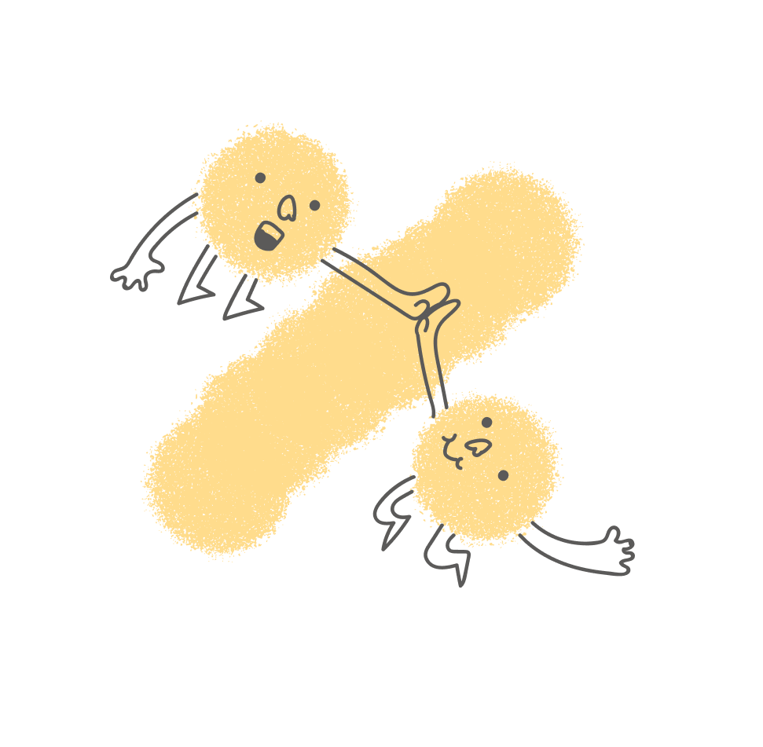
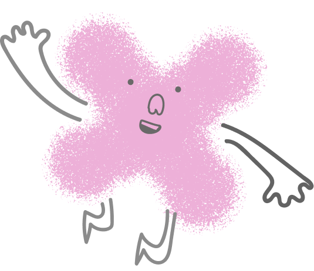
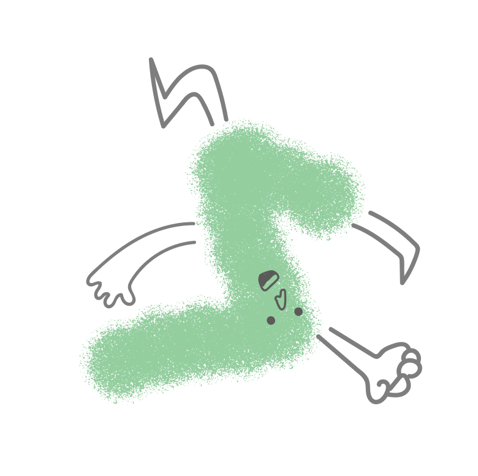
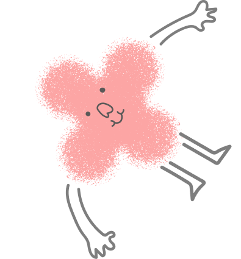
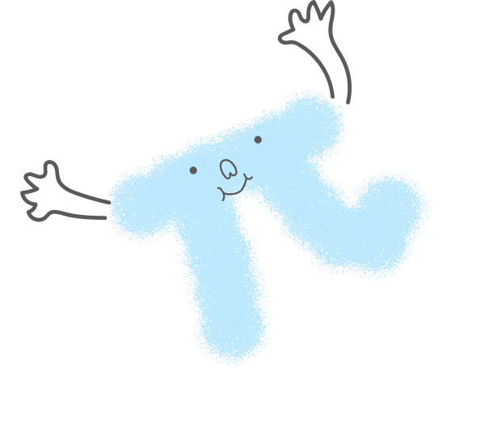

K-12 Global Math Proficiency
PASSING GRADE
THE ACCESS GAP
PLUS Tutoring Platform
Foundations
Tutors
Schools
Researchers
Pattern recognition • Data tracking • Coordination
Trust building • Motivation • Judgment
[Video Recording Placeholder]
This section will be replaced with the actual video recording
01
Pre-session
Coach
02
In-session
Co-pilot
03
Post-session
Maturity
$
2
,
0
0
0
per student per month
Discover
Define
Develop
Deliver
Foundation
Researcher
School
Tutor
Policy influence + donor credibility
Student identification + curriculum alignment
$15–20/hr + pedagogical training
AI
Human
Pattern recognition
Data tracking
Coordination
Trust building
Motivation
Judgment
    
▲
00:00
/
00:00
DURATIONS (s):
Problem
Thesis
Phase1
Phase2
Phase3
System
Admin
Evolve
Close